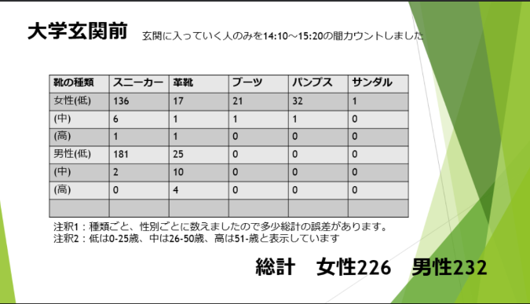
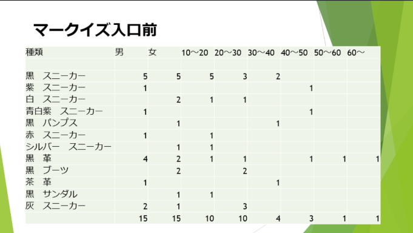

テーマ：大学玄関前とマークイズ入り口前を通過する人が履いている靴の比較
詳細：実施時間：2021/10/19 14:10~15:20
実施場所：神奈川大学玄関前、マークイズ入り口前
観察項目
観察結果
大学玄関前

マークイズ入り口前

＜マークイズ入口＞
黒のスニーカーが一番多かった。
モノクロの服装が合わせやすく使用頻度が高いことによるからではないからだと推察する
時間帯から鑑みて社会人や学生が通路として使用していることが多いのではないか
＜大学玄関前＞
男性に比べて女性の方がはいている靴の種類が多かった(男性2種、女性5種)
年齢層が上がると靴の種類がより限られてきている
服装と靴にはある程度の共通点がある(スーツと革靴、ジャケットと革靴、ブーツ、パーカーとスニーカーなど)
考察・感想
会社に勤めている人の服装は一定化することから、靴も同じように一定化にするのではないかという予想はあたった。学生の層もスニーカーが多い理由としては、動きやすい、どんな服装にも合うことがおおい、色が豊富などと言った理由が考えられた。
また、観察を行った日はそれまでよりも日中の気温が低くその影響でサンダルの代わりにブーツを履く人が増加していると考えられた。
このことより靴を選択する際にほとんどは服装に合うかが多くの人の中で重視されていると考えられる。また、次に季節感が意識されているのではないか。
反省
2つに分かれて観察を行ったが、その際に観察する項目の共有ができていなかったため結果の観察数に大きな差が出来てしまった。次に観察を行う際には項目の共有をするようにしたい。